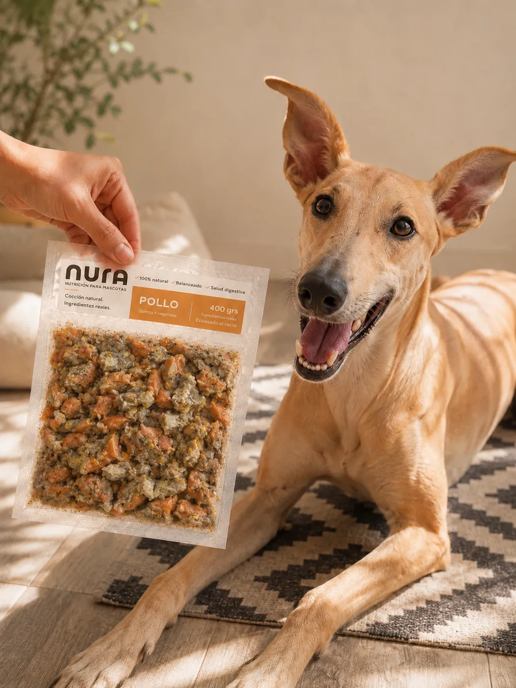
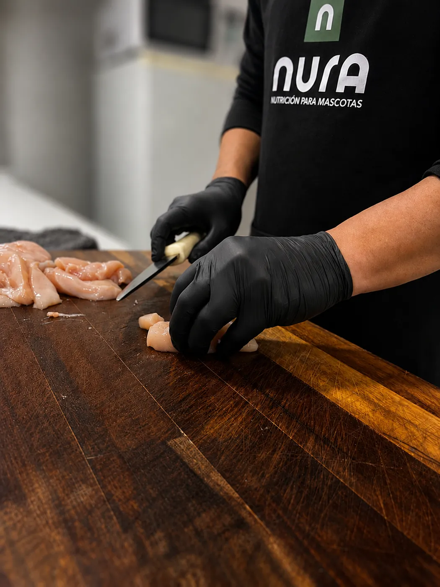
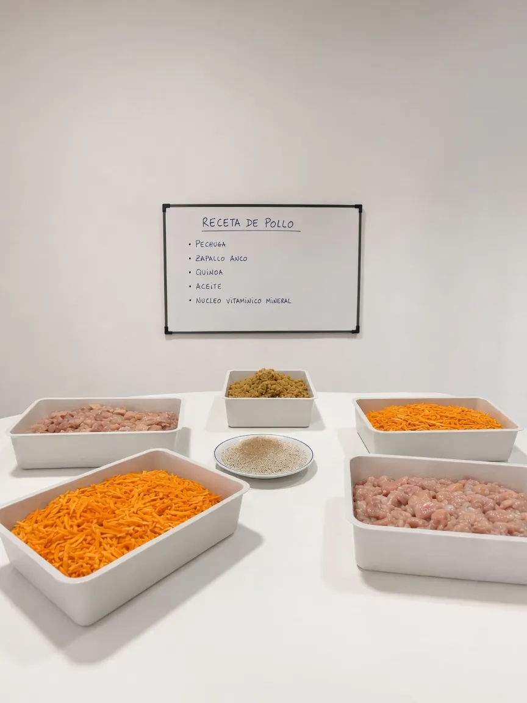
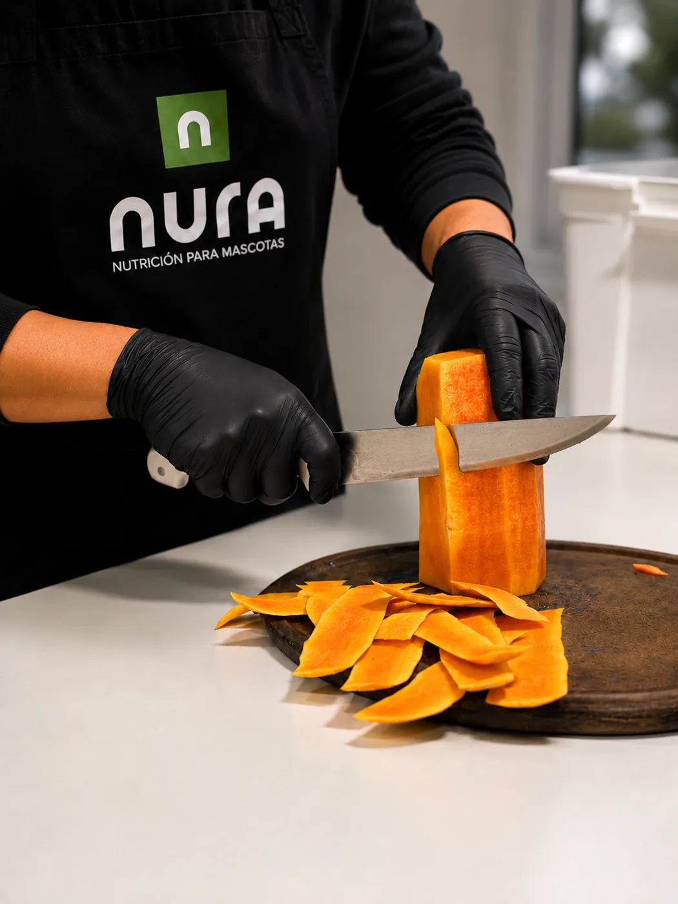
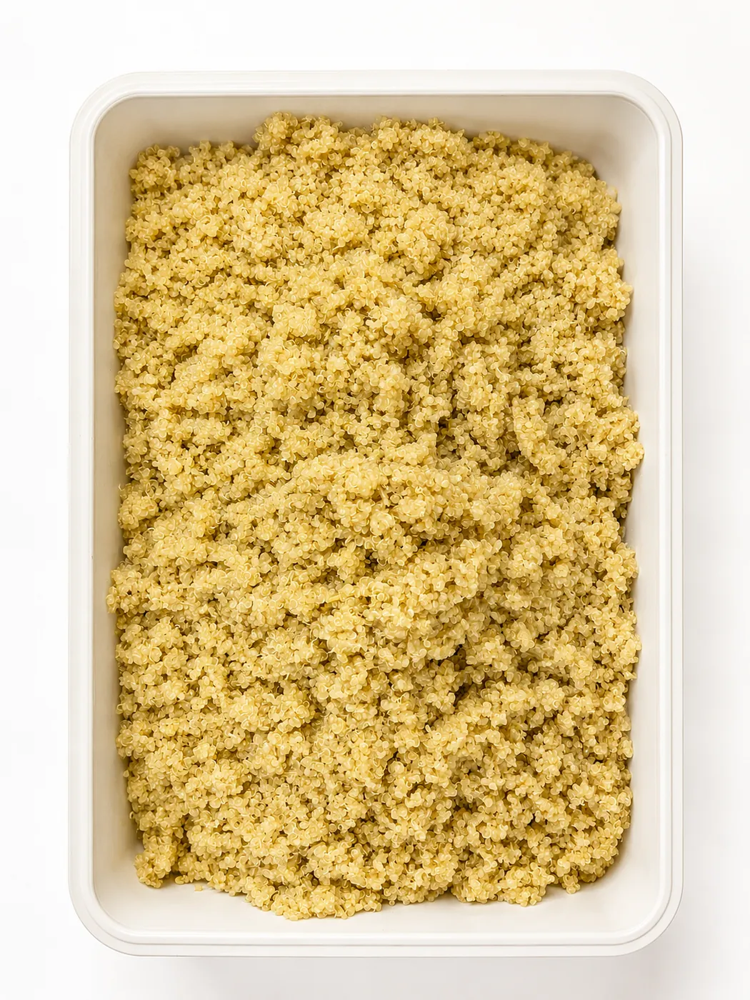
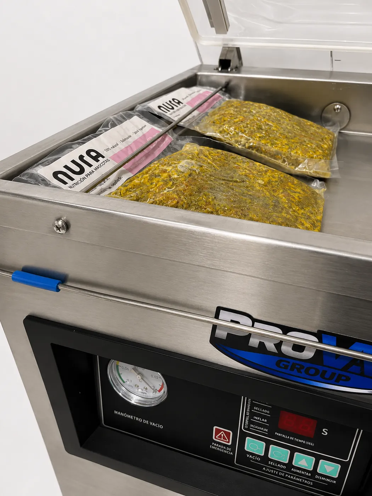
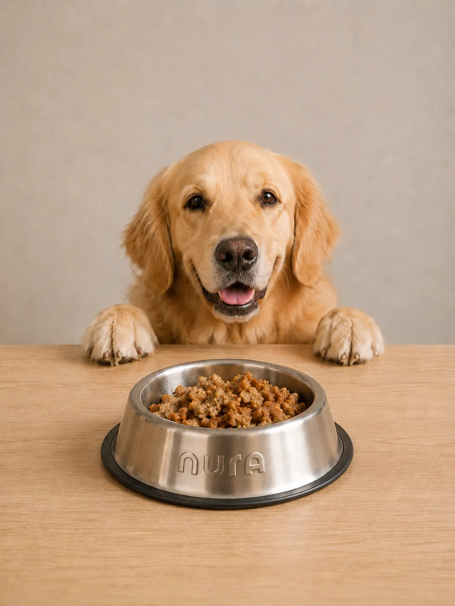
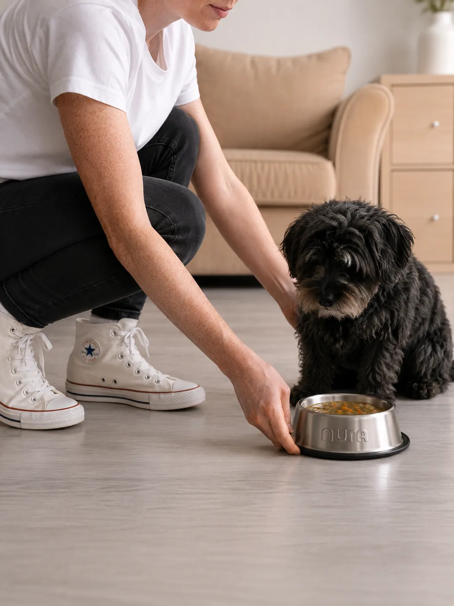

Calidad humana
Carnes, cereales y vegetales frescos, los mismos que elegirías para tu mesa. Nada de subproductos.
Alimento 100% natural para perros, con ingredientes frescos de calidad humana, cocido al vapor en nuestra cocina y listo para servir.
En NURA cocinamos para tu perro como cocinarías para tu familia: con ingredientes frescos de calidad humana, cocidos al vapor para conservar sus nutrientes, sin atajos y sin nada artificial.
Cada receta está desarrollada por un veterinario especialista en nutrición animal y enriquecida con un núcleo vitamínico-mineral y probióticos que ayudan a su salud digestiva y a su bienestar. Comida simple, que se ve y se huele como lo que es: comida real.


Carnes, cereales y vegetales frescos, los mismos que elegirías para tu mesa. Nada de subproductos.
Una cocción suave que conserva los nutrientes, la textura y el sabor natural de cada ingrediente.
Recetas balanceadas, desarrolladas por un veterinario especialista en nutrición animal.
Núcleo vitamínico-mineral y probióticos que contribuyen al equilibrio de la flora intestinal.
Sin colorantes ni saborizantes artificiales.
Bolsas de 400 g envasadas al vacío. Cada una con su proteína, su cereal y sus vegetales, para que puedas rotar y sumar variedad a su plato.
Porque es para casa. Elegimos cada ingrediente, lo cortamos a mano, lo cocinamos al vapor y lo envasamos al vacío para que llegue fresco a su plato.




“Comida que se ve y se huele como lo que es: comida real.”
#SomosNURA
Vacuna, pollo o cerdo. Podés combinarlas para que tenga variedad durante la semana.
Escribinos por WhatsApp. Te ayudamos a calcular cuánto necesita según su peso y actividad.
Entregamos en Rosario al día siguiente de tu pedido.
No necesita cocción. Descongelá, serví a temperatura ambiente y mirá cómo deja el plato vacío.
Una referencia para un perro adulto con nivel de actividad normal. Movés el peso y te decimos cuánto darle por día.
Valores orientativos. Podemos armarte un plan a medida con el peso exacto y el nivel de actividad de tu perro.
Quiero mi plan a medida¿Es cachorro, senior o muy activo? Escribinos y lo ajustamos juntos.
Por el momento entregamos en Rosario. Hacés tu pedido y lo recibís al día siguiente, fresco y listo para servir.

¿Te quedó alguna duda? Escribinos y te respondemos personalmente.
Hacé tu pedido hoy y recibilo al día siguiente en Rosario.